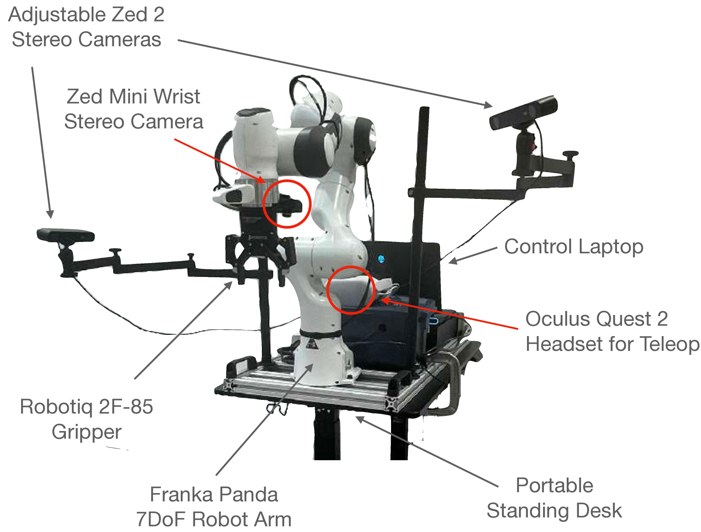
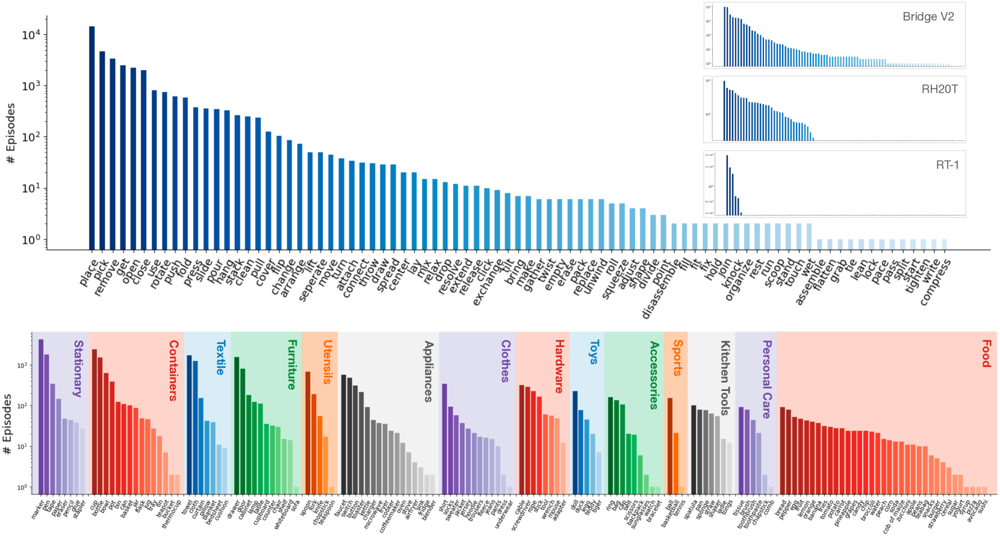

제출: 2024년 3월 19일 (v2 2025-04-22) · 12개월 수집 · 50명 데이터 콜렉터
한 줄 요약 (TL;DR)
13개국 18개 기관·52개 건물·564개 씬에서 12개월간 수집한 76,000 데모(350시간) 규모의 in-the-wild 로봇 조작 데이터셋. 하드웨어 스택은 Franka Panda + Robotiq + ZED 2 스테레오 × 2 (외부) + ZED Mini (손목) × 1 + Meta Quest 2 원격조작. DROID co-training은 in-distribution +22%, OOD +17% 절대 향상. 이후 UMI·OpenVLA·π0·GR00T 등 다수 정책의 표준 학습·평가 baseline이 되었으며, 최근 KineBench·Rofacto·MVA·pi07 등도 DROID를 핵심 스플릿으로 사용한다.
1배경 · 문제의식
ImageNet·LAION 같은 대규모 다양성 데이터가 vision·language 모델의 스케일을 열었듯, 로봇 조작 정책도 실세계 다양성이 확보된 데이터에서 학습되어야 강건해진다. 그러나 기존 조작 데이터셋은 (a) 특정 lab·room 안의 좁은 씬, (b) 하나의 embodiment, (c) 소수 태스크로 편향되어 있어 학습된 정책은 이 좁은 분포 밖에서 급격히 무너진다. DROID는 이 문제를 18개 기관 협력 표준 하드웨어 + 다양한 씬·태스크로 정면 돌파한다.
2핵심 Contribution
표준화된 mobile 데이터 수집 스택 — 이동형 스탠딩 데스크 + Franka Panda 7DoF + Robotiq gripper. 3× 동기화 스테레오(외부 ZED 2 × 2, 손목 ZED Mini). Meta Quest 2로 15Hz 6D 원격조작. 자동 캘리브레이션 파이프라인 동봉.
가장 다양한 in-the-wild 수집 — 12개월간 50명이 13개국·18기관·52개 건물·564개 씬에서 수집한 76,000 성공 데모(≈350시간). 86개의 고유 동사 태스크.
Co-training으로 강한 일반화 이득 — DROID 공동학습이 in-dist +22%, out-of-dist +17% 절대 향상. 씬 다양성 vs 데모 수의 이득을 정량화(Figure 8).
완전 오픈 & CC BY 4.0 — 데이터·코드·하드웨어 재현 가이드 모두 공개, 이후 표준 데이터가 됨.
3Method — 하드웨어 & 수집
Mobile DROID 플랫폼
암
Franka Emika Panda 7DoF + Robotiq gripper
베이스
이동형 스탠딩 데스크(어떤 건물이든 30분 이내 셋업)
외부 카메라
ZED 2 스테레오 × 2 (좌·우 시점)
손목 카메라
ZED Mini 스테레오 × 1
원격조작
Meta Quest 2 컨트롤러 · 6D pose · 15Hz
영상
1280×720 RGB + depth, extrinsic·post-hoc calibration 포함
수집 프로토콜
13개국·18기관에서 50명의 collector가 12개월 동안 수집. 태스크는 "물체 옮기기·정리·닦기·붓기" 등 일상 조작 86가지 동사. 각 건물·방·시점 조합이 곧 하나의 씬(총 564 scene, 52 building). 언어 라벨은 사후 어노테이션 + LLM 보강.
정책 학습 레시피 (기본 baseline)
Diffusion Policy(16-step action chunk) + ResNet-50 ImageNet pretrained + 언어 조건 frozen DistilBERT. 출력은 end-effector translation·rotation·gripper. 이 레시피가 이후 UMI·OpenVLA·π0 등의 참조 baseline이 됨.
4실험 결과
DROID Co-Training vs Baseline (표 3)
세팅
DROID 없이
DROID Co-train
절대 향상
In-Distribution
기준
+22%p
+22%
Out-of-Distribution
기준
+17%p
+17%
OOD 조건에는 distractor 물체, 새 인스턴스, 조명 변화 등이 포함. co-training이 특히 OOD 강건성을 크게 끌어올림.
씬 다양성 vs 데모 수 (Figure 8)
동일 데모 수에서 많은 씬에 얇게 분포시킨 sampling이, 20개 씬에 깊게 몰아 분포시킨 sampling보다 OOD 성능이 유의미하게 높음. 즉, 씬 다양성이 데모 수만큼 결정적.
후속 활용 (요약자 주)
OpenVLA / π0 / RDT / GR00T-N1: DROID를 대규모 사전학습 mix의 핵심 소스로 포함.
UMI / Data Scaling Laws (2410.18647): UMI로 수집한 데이터의 baseline·비교 대상.
KineBench / Rofacto / MVA (2607.*): DROID를 world model·평가 스플릿으로 사용.
5Ablation & 관찰
씬 다양성이 곧 강건성 — 동일 총 데모 수 하에서 광범위한 씬 분포가 OOD 성공률을 크게 향상. 좁은 lab-only 데이터의 한계를 정량 입증.
Co-training vs 단독 학습 — 태스크별 200~500 데모만으로도 DROID 76K와 함께 학습하면 in-dist/OOD 모두 큰 향상. downstream 팀에겐 값싼 fine-tune 레시피 확보.
표준 하드웨어의 중요성 — 18기관 협업이 가능했던 이유는 mobile Franka + ZED 스택을 표준화하고 캘리브레이션까지 자동화했기 때문. 이후 GR00T-N1·pi07 등의 데이터셋 협업 모델의 원형.
6핵심 Figure / Table

Figure 1 — DROID 데이터 다양성. 13개국 18개 기관·52개 건물·564개 씬에서 수집된 조작 데모의 시각화. 다양한 조명·배경·물체·태스크가 한 데이터셋에 담김. (출처: arXiv:2403.12945)

Figure 2 — DROID 표준 하드웨어. Franka Panda 7DoF + Robotiq + 이동형 데스크 + 외부 ZED 2 × 2 + 손목 ZED Mini + Meta Quest 2 원격조작. 30분 안에 재현 가능한 표준 스택. (출처: arXiv:2403.12945)
왜 표준 데이터가 되었나 — (i) 표준화된 hardware, (ii) 씬·기관 다양성, (iii) 공개 데모+코드+가이드의 세 요소가 결합해 downstream 팀이 최소 marginal cost로 large-scale 데이터를 재사용할 수 있게 됨. UMI·OpenVLA·π-시리즈·GR00T·최근 world model들이 모두 DROID를 참조.